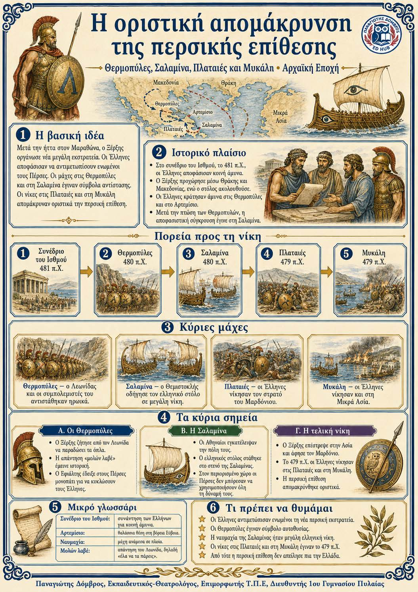

Πληροφοριογράφημα ενότητας
Το πληροφοριογράφημα αυτής της ενότητας δεν έχει ανέβει ακόμη. Οι σημειώσεις παραμένουν πλήρως διαθέσιμες.

Κεφάλαιο 4 · Αρχαϊκή εποχή (800–479 π.Χ.)
Μετά την ήττα στον Μαραθώνα, οι Πέρσες επέστρεψαν με πολύ μεγαλύτερη δύναμη. Οι ελληνικές πόλεις αποφάσισαν να αμυνθούν μαζί. Η αντίσταση στις Θερμοπύλες και η νίκη στη Σαλαμίνα σταμάτησαν την προέλαση του Ξέρξη. Οι νίκες στις Πλαταιές και στη Μυκάλη, το 479 π.Χ., απομάκρυναν οριστικά τον περσικό κίνδυνο. Η κοινή άμυνα και η σωστή επιλογή του χώρου αποδείχθηκαν σημαντικότερες από την αριθμητική υπεροχή.
